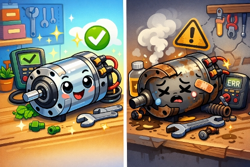
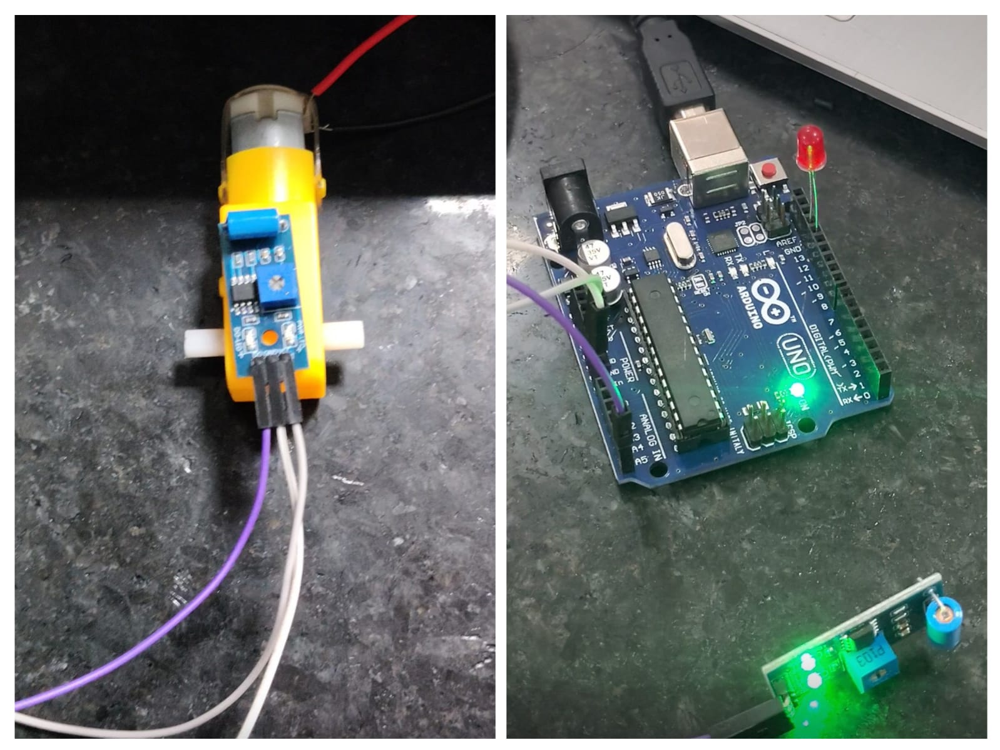
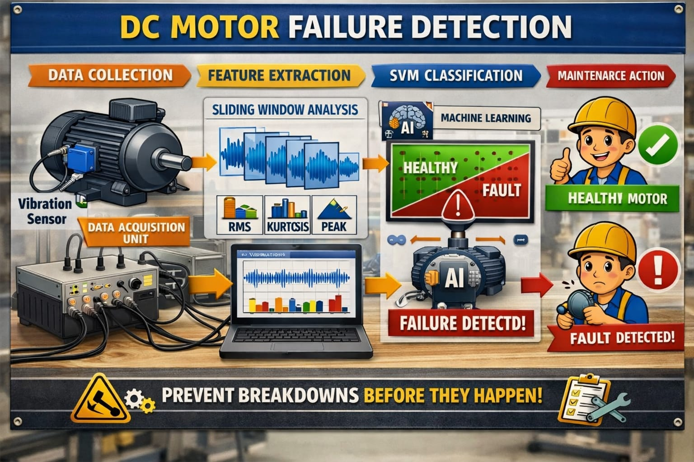
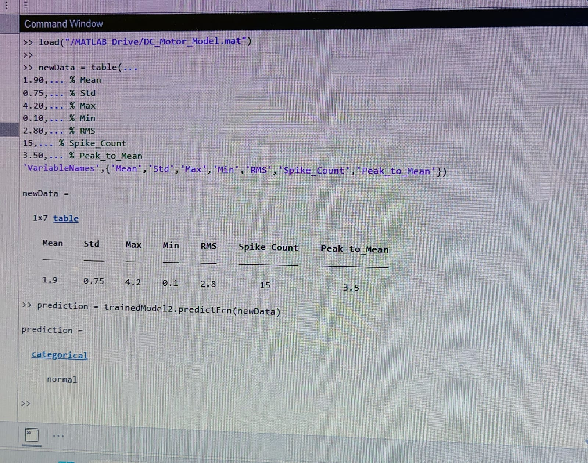
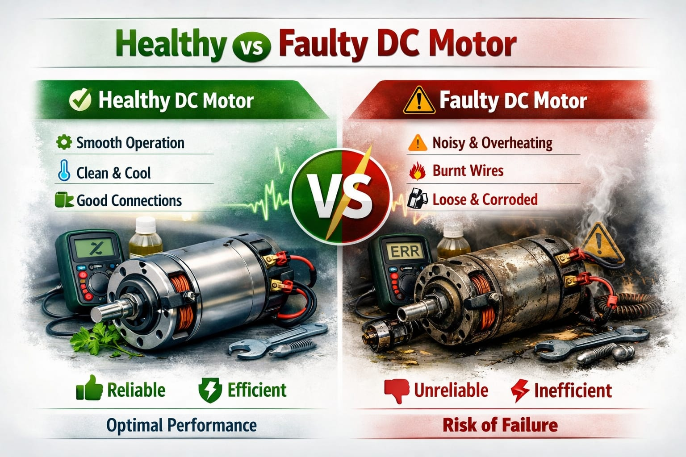

ST
Shambhavi Terdal
PRN: SCFU425054
Machine Learning Based Early Fault Detection Using Vibration Sensor Data
An intelligent machine learning system that monitors vibration patterns and predicts DC motor failures before breakdown occurs, reducing downtime and improving operational efficiency.

The minds behind intelligent motor fault detection
PRN: SCFU425054
PRN: SCFU425056
PRN: SCFU425058
Predictive Maintenance of DC Motor is an AI-powered fault detection system using vibration sensor data and Support Vector Machine (SVM) classification to detect motor failures before breakdown.
Continuous monitoring via accelerometer sensors
Intelligent pattern recognition for fault states
Prevent breakdowns before they occur

Continuous vibration data acquisition and analysis
Multiple ML models for robust classification
Identify failures before catastrophic breakdown
Prevent production line downtime with predictive motor health monitoring
Ensure reliable irrigation systems through early fault detection
Maintain optimal performance in automated robotic systems

Vibration signals captured from DC motor via sensor hardware
Statistical features computed from raw vibration data
Machine learning model classifies motor health status
Timely intervention based on predicted fault conditions
Data analysis, feature extraction, and model training
Microcontroller programming for sensor data acquisition
SVM, Decision Tree, and Ensemble model implementation
Rule-based classification for interpretable fault detection
High-accuracy classification with optimal decision boundary
Combined models for improved prediction reliability
Extracted statistical features from vibration sensor signals
The trained Support Vector Machine model successfully classifies motor conditions into NORMAL and ABOUT_TO_FAIL categories using extracted vibration features.


Obtaining reliable fault-state vibration samples required controlled failure simulation
Healthy samples significantly outnumbered faulty samples, requiring careful model tuning
Environmental interference affected raw signal quality and feature reliability
Identifying the most discriminative features from high-dimensional vibration data
Minimizing false positives and false negatives in classification results
Early-stage faults produced subtle signal changes difficult to distinguish from normal operation